150ha
Extensión de la hacienda
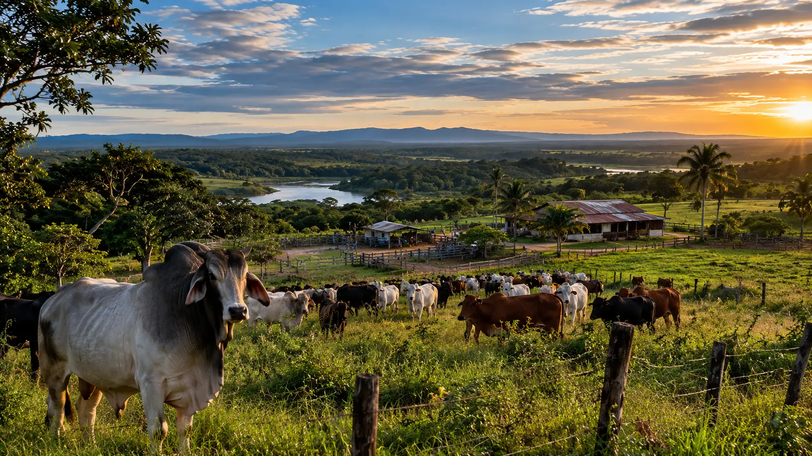
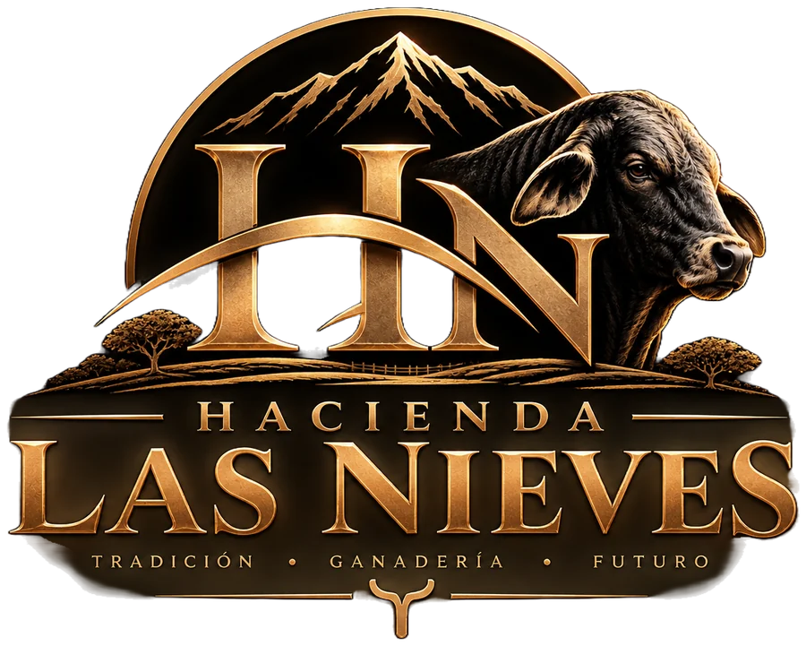
Un proyecto ganadero en las Sabanas del Yarí, San Vicente del Caguán, Caquetá, que integra tierra, forrajes, genética, reproducción y tecnología. Nuestra línea principal es el Girolando Plus.
150ha
Extensión de la hacienda
50cabezas
De ganado bovino
15años
De trayectoria
48L/vaca/día
Meta productiva genética
La Finca
Las Nieves no es un nombre cualquiera. Honra a mi abuela, María de las Nieves Ruiz. Y honra también a las Girolando Plus, esas vacas de pelaje jaspiado cuyo lomo parece cubrirse de nieve cayendo.
La ganadería viene por tradición y herencia pura de familia: los Rueda, generaciones enteras han criado ganado en las llanuras de Arauca y la Orinoquía. Por la familia de mi padre, los Lizcano, la vida también ha estado cerca del campo. De ahí viene esta vocación: no se aprende, se hereda.
San Vicente del Caguán es el lugar donde crecí y estudié. Mi abuelo, Julio César Rueda, fue docente allí durante casi toda su carrera, aunque su infancia y adolescencia las vivió en el campo. La familia Rueda es conocida en el pueblo por él. Ese vínculo con la tierra y con la gente es parte de lo que somos.
Hoy, en las Sabanas del Yarí, en la vereda El Triunfo, trabajamos 150 hectáreas propias con un propósito claro: construir una ganadería tropical eficiente, adaptada al trópico, basada en la integración de tierra, forrajes, nutrición, genética, reproducción y transformación. No compramos animales para revender: hacemos genética de alto nivel. Desarrollamos un sistema completo.
La línea principal es el Girolando Plus, respaldada por quince años de experiencia ganadera que hoy se concentran aquí. Esa es la dirección: seleccionar animales funcionales, fértiles, longevos, que produzcan bien y duren. Ganadería que se sostiene en el tiempo.
Genética
Trabajamos con razas que combinan adaptación, rusticidad y capacidad productiva. La base es el Gyr; la potencia lechera viene del Holstein. El resultado, la línea Girolando.
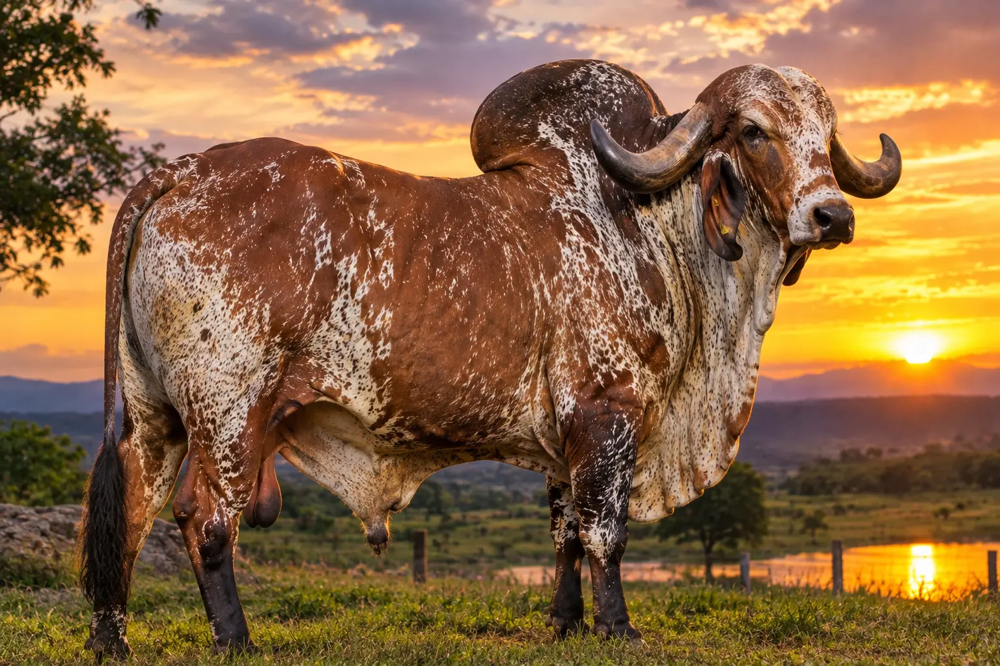
Adaptación tropical
Raza cebuína de origen indio. Aporta rusticidad, tolerancia al calor, capacidad reproductiva y longevidad. Es la base de todo nuestro programa de mejoramiento genético. Trabajamos con semen importado de Brasil de los mejores toros Gyr lechero.
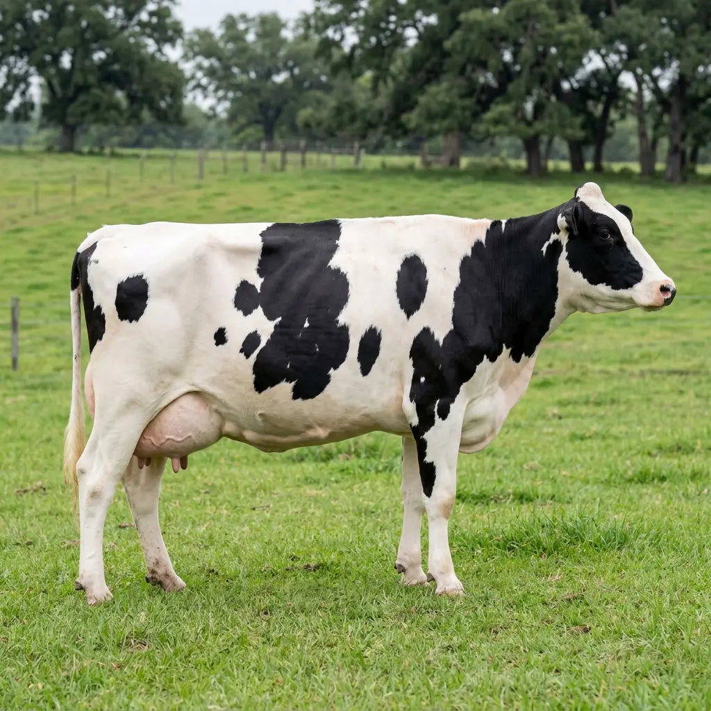
Producción lechera
La raza lechera más productiva del mundo. Aporta capacidad lechera, conformación de ubre y estructura. La combinamos con Gyr para lograr animales adaptados al trópico sin perder producción.
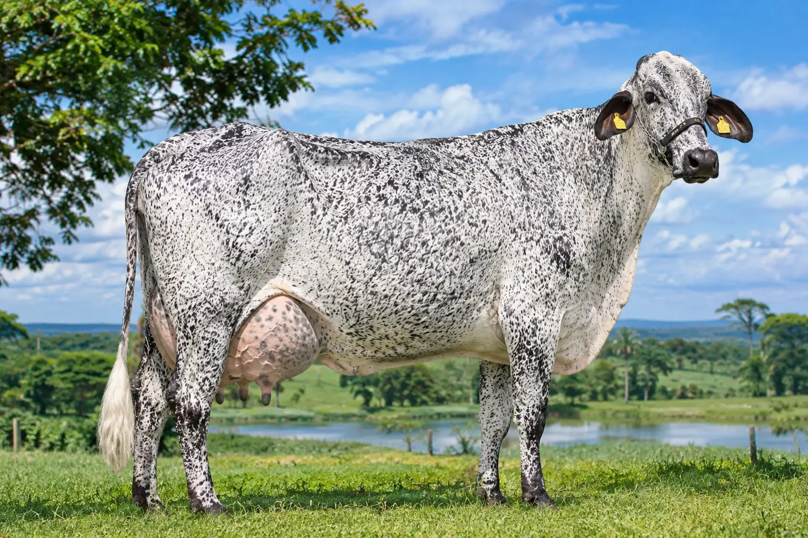
Gyr + Holstein
El cruce que combina lo mejor de dos mundos: adaptación tropical más capacidad lechera. Nuestra línea se selecciona avanzando hacia 5/8 Holstein, conservando la rusticidad del Gyr.
Reproducción
Trabajamos con laboratorio especializado en el ciclo completo de reproducción asistida: aspiración folicular, fecundación in vitro y transferencia embrionaria. Aplicamos estas técnicas a nuestro hato y a clientes externos.
Seleccionamos las mejores hembras del hato por producción, conformación de ubre, fertilidad, patas y estructura. Solo las más funcionales entran al programa.
Aspiración folicular guiada por ecografía. Se recuperan los ovocitos de la donadora sin afectar su ciclo reproductivo.
Evaluación y clasificación de los ovocitos recuperados. Solo los de mejor calidad avanzan a la siguiente etapa.
Fecundación in vitro con semen de toros seleccionados. Cada cruce se decide según el objetivo genético del cliente.
Desarrollo embrionario en laboratorio bajo condiciones controladas hasta el estadio óptimo para transferencia.
Transferencia a receptoras seleccionadas por sanidad, ciclicidad y condición corporal. Así multiplicamos la genética superior.
Carne
Usamos semen de razas especializadas en producción de carne sobre vientres F1 adaptados al trópico. El objetivo: animales con buen crecimiento, musculatura y calidad de canal, sin perder rusticidad.
Crecimiento y calidad
Raza británica de carne con excelente conversión, precocidad y calidad de canal. La usamos sobre vientres F1 adaptados para obtener animales con buen rendimiento y rusticidad tropical.
Rusticidad tropical
Raza criolla colombiana, adaptada al trópico, con buena fertilidad, longevidad y producción de carne. Aporta rusticidad y eficiencia en condiciones tropicales.
Leche
Producimos y transformamos. La leche de nuestro hato se convierte en una línea de productos lácteos con nuestra marca. Todos disponibles por WhatsApp.
Leche fresca de nuestro hato Girolando Plus.
Queso fresco de textura suave, ideal para mesa y cocina.
Queso salado de tradición caribeña, de larga duración.
Mantequilla artesanal elaborada con crema de nuestra leche.
Yogurt natural elaborado con fermentos seleccionados.
Bebida fermentada de tradición, refrescante y nutritiva.
Todos nuestros productos llevan el sello de Hacienda Las Nieves. Consulta disponibilidad y precios directamente por WhatsApp.
Consultar productosForrajes
La genética solo expresa su potencial cuando el animal recibe una nutrición adecuada. Trabajamos con gramíneas, leguminosas, arbóreas y materiales de corte que sostienen la producción durante todo el año.
Gramínea · Pastoreo
Híbrido de Brachiaria con alta producción de biomasa y buena calidad nutricional. Tolerante a sequía y adaptado al trópico húmedo.
Gramínea · Pastoreo
Híbrido de Brachiaria con excelente producción de forraje, buen valor proteico y resistencia al pastoreo intensivo.
Gramínea · Corte
Pasto de corte de alto rendimiento. Se utiliza para alimentación estratégica y como reserva en épocas de menor disponibilidad.
Gramínea · Corte
Pasto de corte con altísima producción de biomasa por hectárea. Utilizado como reserva estratégica para épocas críticas.
Arbustiva · Proteína
Arbustiva con alta concentración de proteína. Excelente complemento forrajero en sistemas tropicales.
Leguminosa · Proteína
Leguminosa arbustiva con buen aporte proteico. Complemento estratégico de la dieta, especialmente en época seca.
Leguminosa · Cobertura
Leguminosa rastrera con aporte proteico y buena cobertura del suelo. Se asocia con gramíneas para mejorar la dieta.
Cereal · Silo
Utilizado para ensilaje y alimentación estratégica. Fuente principal de energía en épocas de déficit forrajero.
Arbórea · Proteína
Arbórea con alto contenido proteico y muy palatable para rumiantes. Se usa en sistemas silvopastoriles.
Arbórea · Proteína
Arbórea leguminosa, buena fuente de proteína y forraje de corte. También sirve como cerca viva.
Leguminosa arbórea · Proteína
Leguminosa arbórea con alta proteína. Excelente en sistemas silvopastoriles intensivos, con manejo adecuado.
Leguminosa · Cobertura
Leguminosa trepadora con buena cobertura de suelo y aporte proteico. Se asocia con gramíneas.
Arbórea · Proteína
Arbórea con alto contenido proteico, minerales y vitaminas. Excelente complemento forrajero.
Porcinos
Manejamos una línea de cría orientada a la eficiencia reproductiva y a la producción de carne de calidad, con instalaciones propias dentro de la hacienda.
F1 · Yorkshire × Landrace
Hembras F1 con alta prolificidad, buena habilidad materna y producción de leche. Son la base de nuestro programa de cría.
Duroc
Verracos Duroc que aportan crecimiento rápido, musculatura marcada y buena calidad de canal en los lechones para engorde.
Producción orientada a la engorda de lechones con genética terminal. Consulta disponibilidad por WhatsApp.
Avicultura
Línea especializada en producción de huevo comercial, con manejo técnico y alimentación balanceada dentro de nuestras instalaciones.
Línea principal
Gallina ponedora de alta eficiencia, con buena persistencia de postura y calidad de huevo. Es nuestra línea principal de producción.
100 aves en postura
Manejamos 100 aves en postura, con alimentación balanceada y control sanitario. Proyección de crecimiento hacia otras líneas y aves de reemplazo.
Consulta disponibilidad de huevo por WhatsApp.
Equipo
Un equipo familiar con experiencia en ganadería, administración, operaciones y comercialización. Cada uno aporta desde su área para construir la ganadería del futuro.
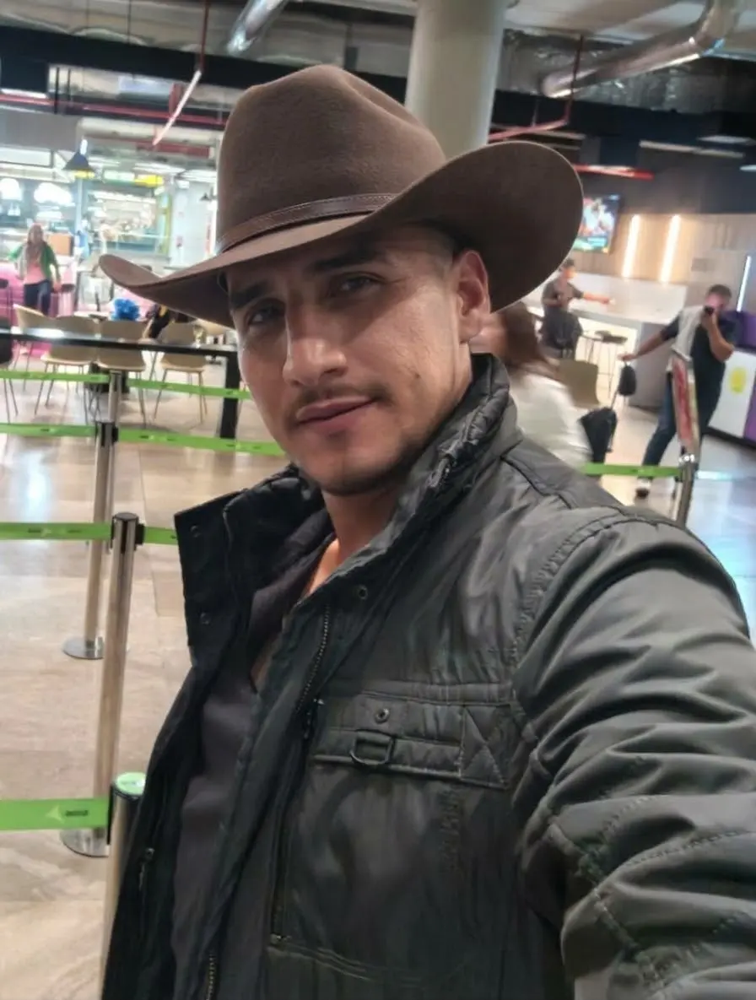
Fundador
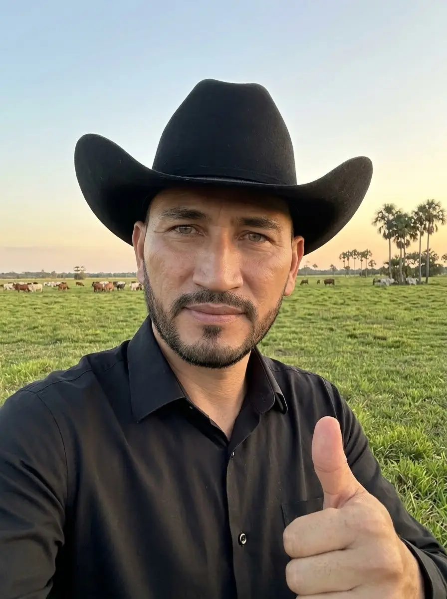
Director general
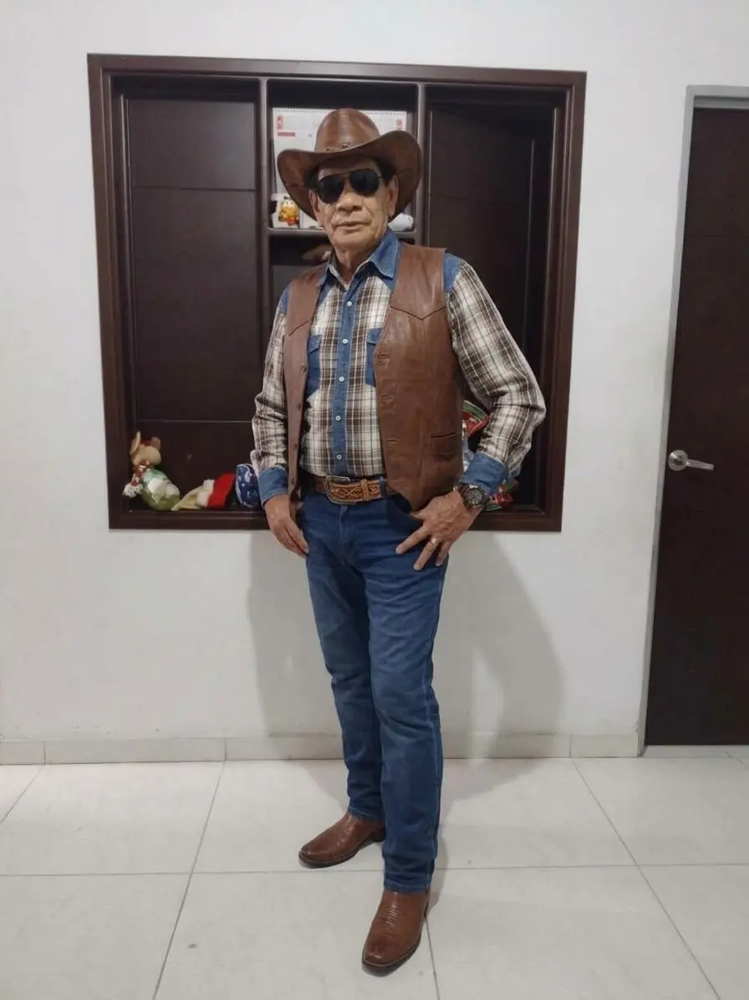
Director financiero y administrativo
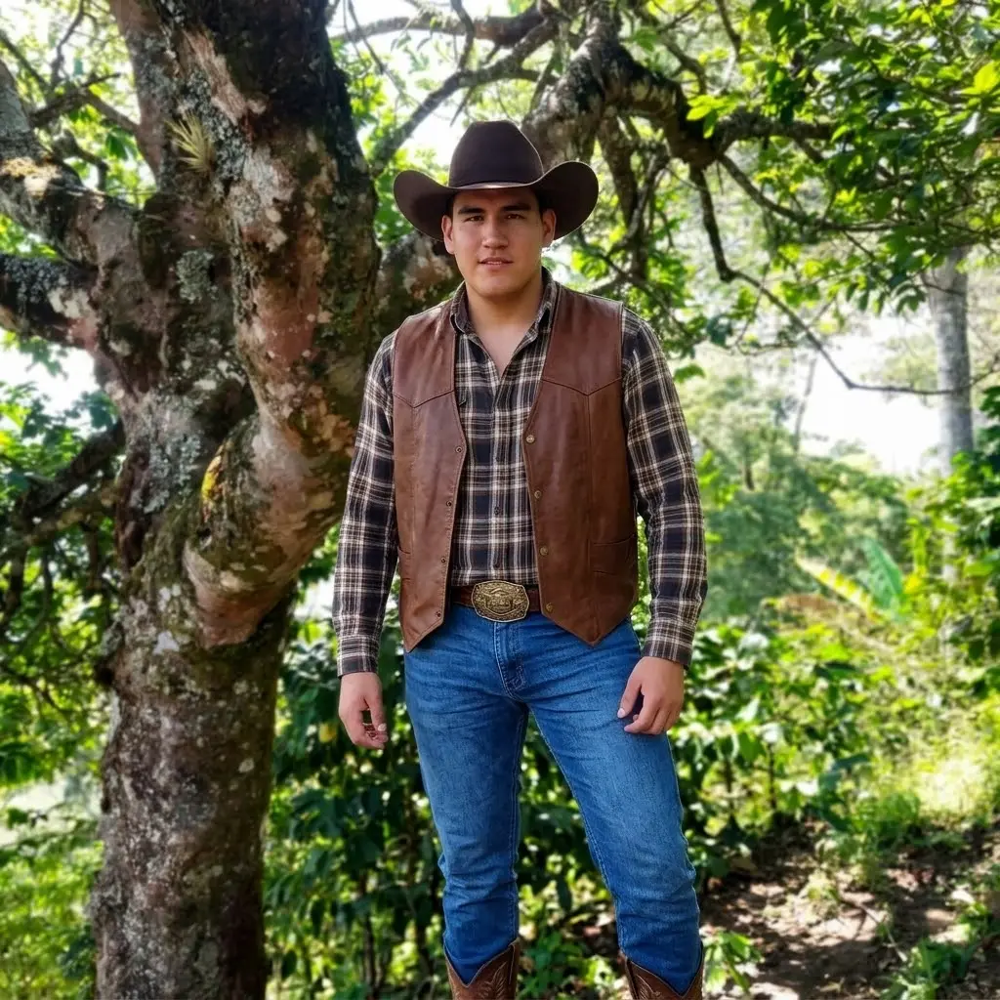
Director de operaciones
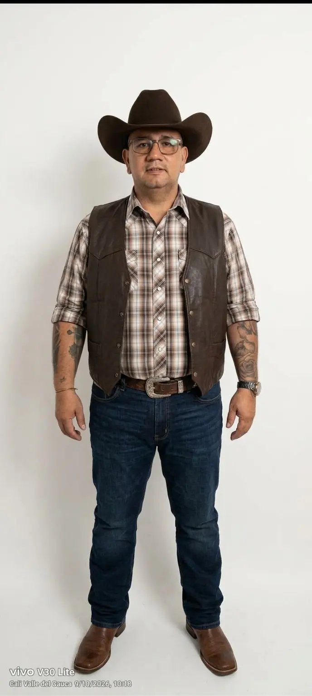
Director de producción
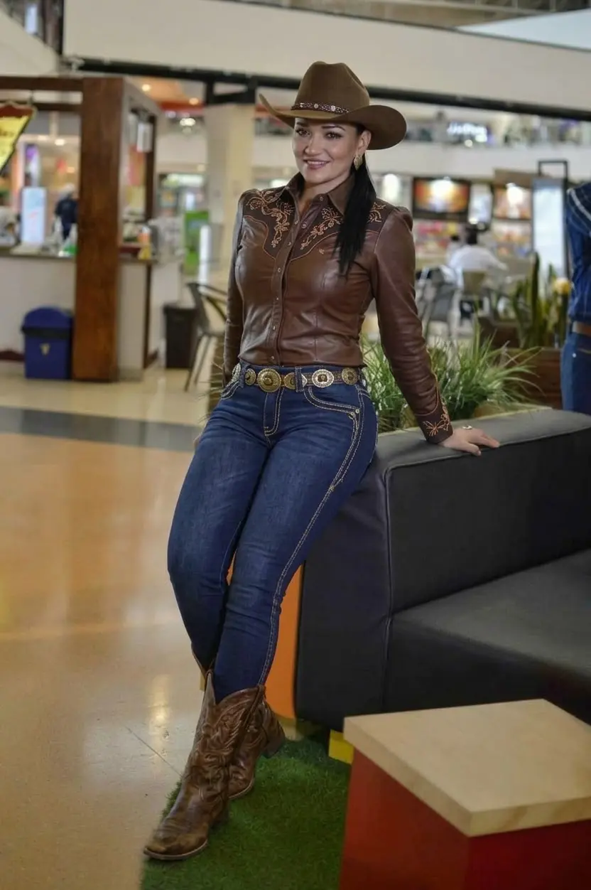
Directora de marketing y ventas
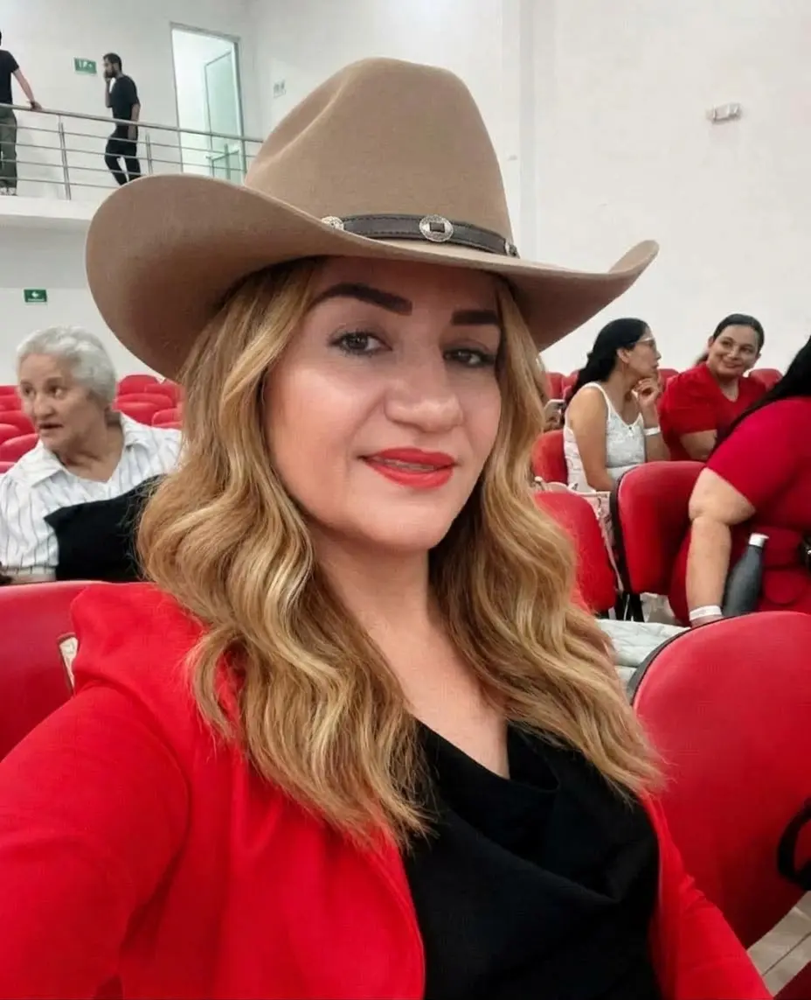
Directora comercial
Estamos en la Vereda El Triunfo, Sabanas del Yarí, San Vicente del Caguán, Caquetá. Para indicaciones exactas, escríbenos por WhatsApp.
Abrir en Google MapsContacto
Atendemos consultas sobre ganado, genética, reproducción avanzada, productos lácteos, porcinos, huevos y visitas a la finca. Estamos disponibles 24/7.